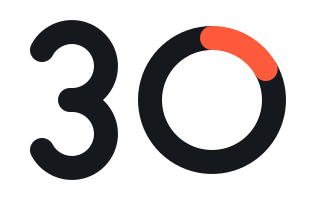
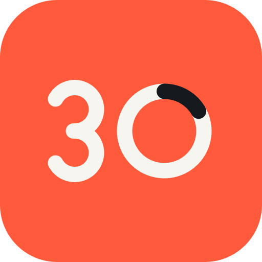
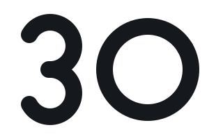

Brand sheet · v1 · October 2026
Paper & Coral · Instrument Serif + Manrope
1 · Logo

Mark on paper · thirty-mark.svg

Mark reversed · thirty-mark-reverse.svg

Mark on coral: window turns ink · thirty-mark-on-coral.svg

App icon / favicon · thirty-app-icon.svg
Horizontal lockup · thirty-lockup.svg (default for nav, documents, slides)
Horizontal lockup reversed · thirty-lockup-reverse.svg
Lockup with descriptor · thirty-lockup-descriptor.svg (website header, footers, covers)
Stacked · thirty-lockup-stacked.svg (social avatars, square spaces)

One colour · thirty-mark-mono-ink.svg (print, embroidery, stamps)
2 · Clear space and minimum size
Keep a clear space of x on every side, where x is the height of the coral window (the stroke of the ring, 12% of the mark's height). Minimum size: mark 24px tall on screen, 6mm in print; horizontal lockup 120px wide; descriptor lockup 360px wide, below that use the plain lockup.
3 · The idea
The mark is the number 30, the FDA's 30-day reporting clock. The 0 is a ring: a clock face. The coral segment is the first five days, the window for the most serious reports. Thirty keeps every complaint on that clock. The wordmark is Manrope 800, tracked tight (−0.04em). The descriptor, "Medical device complaint reporting, on the clock.", explains the business; the tagline, "Every complaint, on the clock.", is for covers and campaigns. Use one, never both in the same lockup.
4 · Don't
No rotation. No stretching. No ink mark on dark or busy grounds (use the reverse). No colours outside ink, paper and coral; the window is only ever coral (or ink, on coral). No outlines, shadows or gradients. Never redraw the 3 or close the ring.
5 · Colour
Paper: the ground. Pages, cards, slides. Dark mode flips paper and ink.
Ink: all text, primary buttons, the mark, chart bars.
Coral: the accent. The five-day window, one key action per screen, deadlines under 7 days, REPORTABLE, cost-of-failure numbers. Never body text, never backgrounds for text blocks.
Slate: secondary text, captions, sources, placeholders.
Stone: lines, dividers, disabled fills, the ring track. Stone-light #EDEAE3 for hover panels.
Amber: NEEDS INFO only. Nothing else, ever.
Hover states: ink → #2A2F37, coral → #E84E31. Coral for small text on paper: #C2381A (5.0:1). On ink: secondary text #B9BEC6, lines #3A414B. Contrast: ink on paper 16.3:1, ink on coral 5.7:1 (AA), ink on amber 9.4:1, slate on paper 5.5:1 (AA), paper on coral 2.8:1 (fails: never put paper text on coral, and never coral text on paper below 48px; coral on paper is for big numbers, the window and the ring only).
6 · Type
Serif for headlines and big numbers only, never for UI or body. Sans for everything else. Weights: 500 body, 700 buttons and labels, 800 wordmark, pills and h3. Headlines state the takeaway in one sentence; numbers first, no drama.
7 · Buttons
Radius 10px · Manrope 700 15px · 2px border · hover darkens · focus ring coral. One accent button per screen. Accent is coral with ink text; paper text on coral fails contrast.
8 · Status pills and badges
Pills: 28px, fully round, Manrope 800 12px uppercase. Coral = reportable, amber = needs info, outlined = not reportable, filled ink = approved. The ring: track stone, elapsed ink, first five days coral. All in css/thirty.css; live examples in components.html.